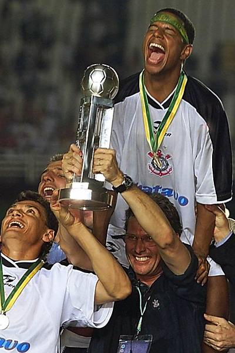

Quem é Marcelinho Carioca?
Por: Theylor
Marcelinho Carioca é um ex-jogador de futebol brasileiro, conhecido principalmente por sua passagem histórica pelo Corinthians. Ficou famoso pela excelente cobrança de faltas, visão de jogo e pelos títulos conquistados com o clube.
Considerado um dos maiores ídolos da torcida corintiana, Marcelinho marcou época nos anos 1990 e início dos anos 2000, conquistando campeonatos importantes e deixando seu nome na história do futebol brasileiro.